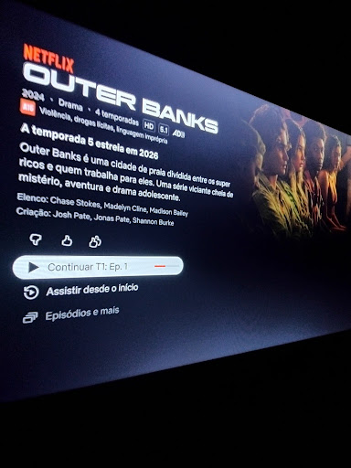

Serviço na Igreja
Sou Cristão. Na minha igreja existe serviços, esses serviços são: Midia, We care, Kids, Voluntários e Limpeza. Faço parte da mídia, estou na parte de projeção de louvores, leitura biblica etc... Acredito que tenho um chamado por parte da tecnologia, tenho muita agilidade, modestia parte, rs

Meu Porto-Seguro
Minha Família, meu porto seguro Não tenho palavras para explicar o amor que sinto por eles, minha família podes er um pouco bagunçada, ou até meio bringuenta, mas eu amo mesmo assim! Não seria nada sem a confiança deles para a minha pessoa.... Deus com certeza caprichou nela.


Meus Amigos!
Meus Amigos! Acredito que a vida fica muito mais feliz com amigos. Esses são super importantes, pois deixa as coisas muito mais divertidas! Love my friends :)


Hobbies
Filmes. Sem dúvidas, o cinema é um dos meus passa-tempo preferido. Os filmes me fazem sentir coisas únicas, tristeza e alegria, desespero e paz... e diversas outras coisas! Eu AMO tudo isso!! x-x
